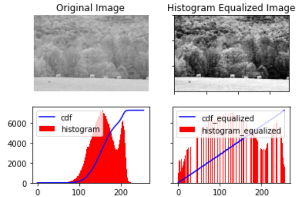
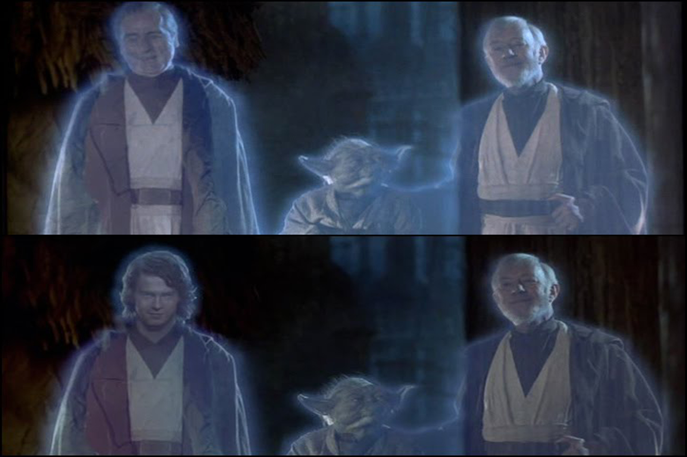
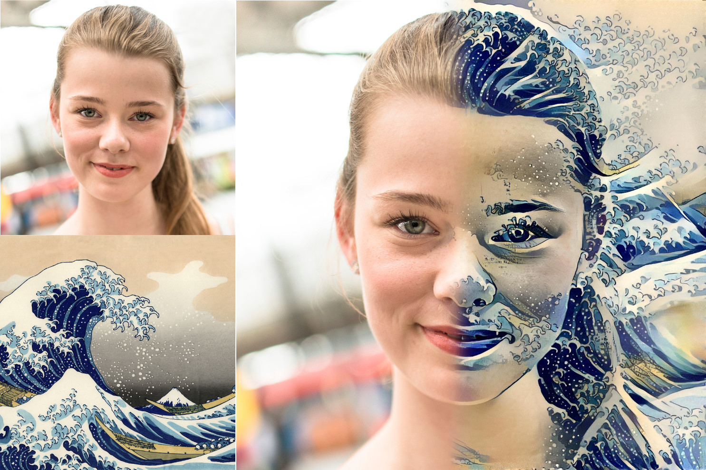
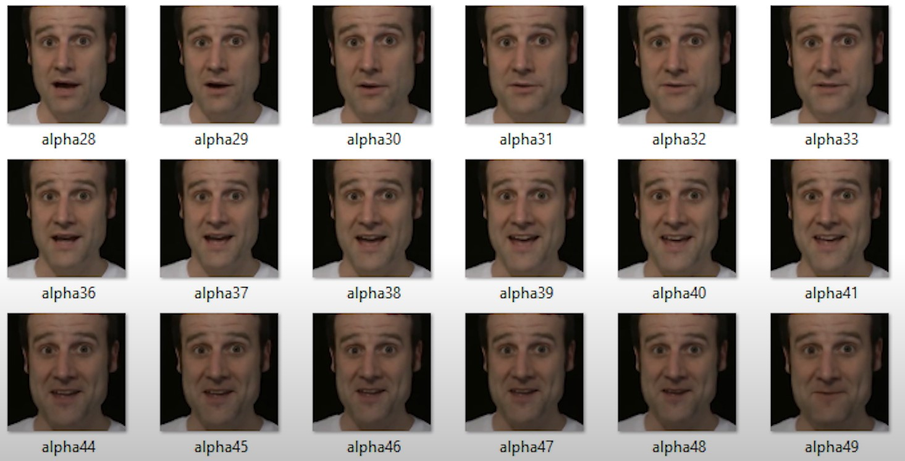

Broken down to its simplest form, an image is just a collection of pixels with a certain resolution and file format. A video is just a collection of images strung together with certain parameters. With these forms of media being as simple as they are, it's relatively simple to manipulate them using basic computer-enabled tools and algorithms, for a vast array of purposes and results.
Basic adjustment
Images
Given that the pixels comprising an image are defined by only a few numerical values, it's easy for a computer to adjust those values to create a certain effect.
Some of the simplest changes that can be made are:
Brightness
Contrast
Hue
And all of these can be achieved by shifting the three RGB colour values.
For example, with 8-bit RGB colour space, a pixel may be defined as (x,y,z), where all three values are in the interval [0,255].
Increasing brightness would involve increasing all 3 values, increasing contrast would involve moving the values further from the median point, and changing hue would involve increasing some values and decreasing others.
These basic features and others like them are present on most consumer-grade image handling software, such as Photoshop, Instagram, and even Preview.

1.1 An image given increased contrast, shown by the range of histogram values
More complex algorithms are able to produce more interesting effects, such as:
Removing the background of an image by setting all pixels in a certain area to be completely transparent
Transparency is controlled by a forth value, called the alpha channel
Identifying the area to be altered is usually the most difficult part, and often requires manual adjustment by the user
Converting an image from one filetype to another
Different image filetypes support different attributes, such as transparency (present in .png files but not .jpg files)
Different filetypes often use different levels of image compression, which reduces the file size and sometimes loses visual information in the process
Identifying faces or other recognisable objects in an image
This is exceptionally useful for algorithms which automatically organise and label collections of images, such as Apple's Photos app
However, this technology still has a long way to go, as demonstrated by the relative effectiveness of CAPTCHA tests and the common mistakes made by content filters (such as believing sand dunes to be inappropriate images)
Noise reduction
Able to reverse the effects of compression, such as JPEG artifacts
Also able to clean up the effects of electronic noise, baked into the image by the camera that captured it
Excessive noise reduction can lead to a loss of detail
All these tools assist image analysis and make it far easier to produce better-looking images in a format suitable for their intended use. Advancements made in basic image-adjustment algorithms are incredibly useful and are frequently used by the vast majority of people in digitally developed nations.
1.2 Clearly visable noise in a digitally captured image
Videos
Algorithm-based video editing is much less widely used, but is just as useful for the people who need it.
Many consumer-grade algorithms of this nature are included in high-end editing software, such as Premiere, After Effects, and Final Cut Pro.
Some features enabled by algorithms are:
Video stabilisation
Motion blur
Increasing framerate
2.2 A video given motion blur by Adobe After Effects
2.1 A stabilisation algorithm which keeps the recognisable pixels in the red boxes inside the green boxes, by subtly stretching and moving each frame
There have been concerns raised over the use of modern editing capabilities to 'improve' older video files, such as in the following instances:
George Lucas's 'Special Editions' of the original Star Wars Trilogy and 'Director's Cut' of his previous film THX-1138
These made use of modern visual effects and compositing technology to alter many scenes, and to insert some entirely new ones.
The changes made are widely criticised, mostly due to the fact that the original versions of the films are no longer widely available
The fact that modern computing technology can be used to essentially overwrite previously existing versions of films is therefore a great source of concern for many
The artificial increase of the framerate of videos through AI-based interpolation
This is made possible through software such as DAIN, which analyses the movement of pixels from frame to frame to interpret images that may have come in-between
However, many believe this infringes on the artistic integrity of hand-animated videos
The software both overwrites the original sequence of frames, which were drawn by the artist to portray motion of a certain energy and style, and occasionally inserts frames with noticable 'smears' and inconsistencies

2.3 Top: The original ending of Return of the Jedi / Bottom: The 'Special Edition'
2.5 The original video is on the left, and the other video was created through frame interpolation
2.4 The original video is on the left, and the others are created through frame interpolation
More advanced applications
Digital art
All the applications of computer algorithms discussed so far have aimed to enhance media and media analysis without changing the basic purpose of the media. While framerate interpolation and 'special editions' of films may slightly alter the artistic intent of the work, the work is still intended to be viewed in the same fashion by its consumers. However, digital manipulation can also be used to alter a piece of media to such an extent that the manipulation becomes a work of artistic expression in its own right.
Consider, for example, the AI-enabled tools available at the Deep Dream Generator, which are able to blend together two images/textures in a variety of ways to produce a completely visually distinct result.
These tools emerged from the original 'Deep Dream' tool, which was initially "invented to help scientists and engineers to see what a deep neural network is seeing when it is looking in a given image", but evolved into "a new form of psychedelic and abstract art".

3.1 An application of the 'Deep Style' tool
3.2 An application of the 'Thin Style' tool
3.3 An application of the original 'Deep Dream' tool
A simpler use of modern image manipulation software is animating still images. The Deep Nostalgia tool provided by MyHeritage is perhaps the most well-known example.
This technology was developed for the purpose of animating old family photos, as displayed on the MyHeritage homepage, but works on any image containing a recognisable face. While the technology on display here is certainly impressive, there remains an eerie quality to the final result, similar to the 'uncanny valley' effect of replications of the human form which are near-identical.
Displayed in this section are just a handful of the many artistic applications of image manipulation algorithms. Advancements in computer science have enabled the emergence of new forms of art, evolved from the building blocks of simple image adjustment techniques.
3.4 The original image
3.5 The image given motion by MyHeritage
Deepfakes and ethics
Perhaps the most impressive use of modern computing technology to manipulate media is also its most controversial use. An AI is fed a large number of images of a person's face, usually taken from individual frames of a video, to give it an understanding of what they look like from multiple angles and under different lighting conditions.
Using this data of person A, along with data of changing facial expressions and alignment taken from a video of some person B, the video of person B can be adjusted to give them the face of person A.
While the above example is relatively harmless, the ethics of using a person's likeness to insert them into a scene without their consent is highly questionable, especially when this technology is used to create pornography, as roughly 96% of online deepfakes are.
Thankfully, processing power is still a barrier to most amateur deepfake production. The analysis and re-rendering of thousands of frames of video prevents most low-end hardware from realistically being able to produce deepfakes, although modern hardware is advancing fast enough that things may not stay that way for long.

4.1 A collection of frames taken from a video of Matt Parker
4.2 This technology used to superimpose Nicolas Cage's face onto Amy Adams
Media manipulation technology has come a long way from early days of image adjustment, for the better and the worse. Putting aside the ethical implications of some of the most advanced uses of computer science in this field, strides made have opened the doors to far better looking images and videos, as well whole new genres of digital art and truly impressive synthetic media. Where the technology will go from here is impossible to predict, but this is a field of computing that will only continue to evolve.